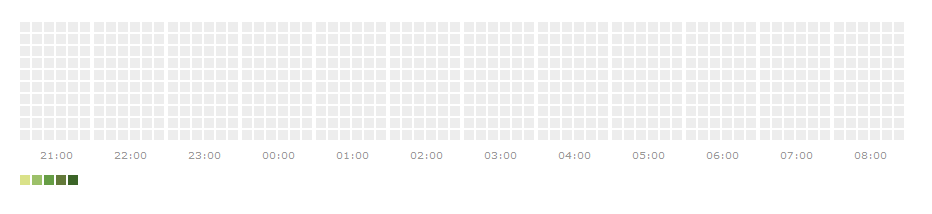

The calheatmapR package is an R interface to the cal-heatmap Javascript charting library, used to create calendar heatmaps to visualise time series data. The package is a work in progress and can replicate some of the more basic elements of the Javascript library.
These help pages walk through the use of the functions, which are hopefully quite simple to use, but it is worth paying attention to the Data page, which explains the required format of the data in order to be plotted. The primary function calheatmapR just loads data and plots using the defaults set in the Javascript library. There are three other functions that allow customisation of the calendar heatmap, these functions follow a similar pattern to those found in the dygraphs htmlwidget. chDomain customises elements to do with the domains (ie. time periods) and the domain style, chLabel customises the labels on the plot, and chLegend customises the Legend.
The three functions do not cover everything found in the Javascript library, they cover the vast majority of Options. What is not found in this package (at the moment) are the Methods and Events sections on the cal-heatmap homepage. I am also unsure how these calendar heatmaps will work in a shiny app that wants to update data.
The package has been built using the htmlwidgets package, developed by Ramnath Vaidyanathan and JJ Allaire (and RStudio). And a word to timelyportfolio who has built numerous htmlwidgets, and along with Ramnath and JJ inspired me to try build this package, be sure to check out the buildwidgets site.
The default plot is shown below:
